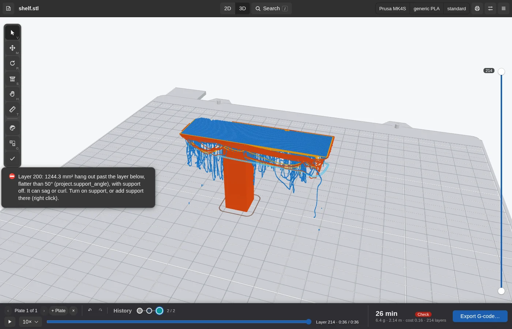
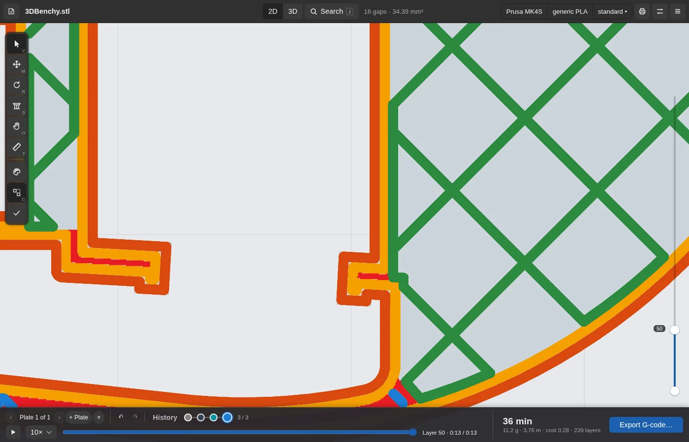
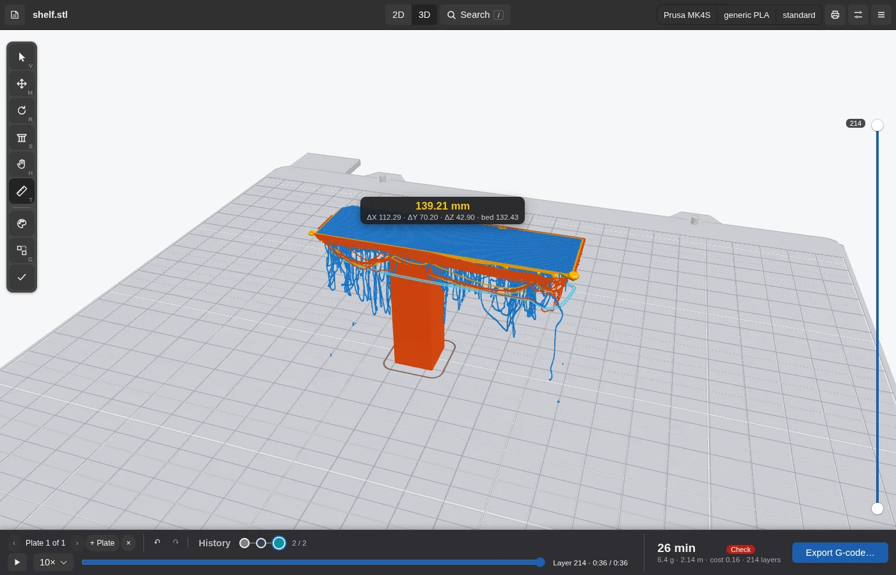

Everyday tasks
9Check the print
Find the problems before you print: overhangs with no support, gaps in the solid layers, and wrong sizes.

Check
Click Check, the last button of the tool strip. The list gives, the worst first:
- an overhang with support off;
- a bridge, with its span (a long bridge can sag);
- a shape that starts in the air;
- a line that needs more plastic than the hot end melts (
filament.max_flow); - layers that print faster than
filament.min_layer_time; - a layer with many retractions.
Each issue says what it is, and which setting changes it. Click an issue: the view goes to its layer, and selects its line.
Gaps

- Press G. The gaps of the top layer show in red. The header gives their count and their area.
- Click a gap. The panel gives its size and the settings that can close it, the best first.
- Click Apply for the whole print, or This layer for the layer of the gap.
Gap fill (on by default) closes most gaps.
Measure

Press T. Click two points of the print or the bed.
- The label gives the distance, and its parts along X, Y, and Z.
- A point near the end of a line snaps to it. Hold Shift for no snap.
- A click on a circle or an arc gives its diameter, and puts the point at its center.
- Esc clears the tape.